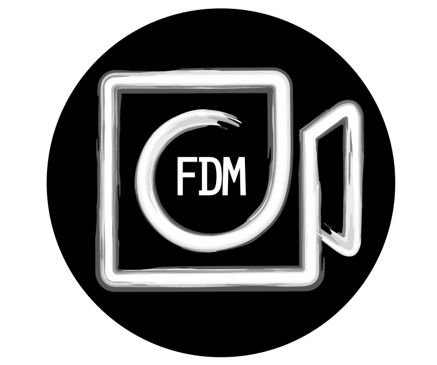

Being that I love making videos, I started a little side business. It's called Fisher Digital Media. Most of my work has been making wedding videos, but I also have made commercials and similar promotional videos for people. I feel like I know my way around the Adobe video editing software like Premiere Pro and After Effects, yet I still learn something new about each one every day.
I started back around middle school with a video camera. My friend and I would play around with it and make stupid little videos. Before long, I started playing around with editing the videos, and around that time, YouTube was starting to be a thing. So we started making content for that. Looking back, I am almost embarassed by the videos that we made, but it was an essential learning time to get where I am today. We took a classes in high school with some more friends and became known in our school as the video guys.
I feel rewarded when I see the final product of a project that I have worked on. Seeing people's reactions is also a huge rush. That's kind of what keeps me going in the business, because the money part just wouldn't be enough.
I included two links at the top of this page. FDM Website is for Fisher Digital Media. It's a mock website I created but haven't officially launched yet. On there I have a portfolio if you have any interest in seeing what I've done. I also included a link to our YouTube channel that we uploaded videos to throughout high school. Feel free to poke around.